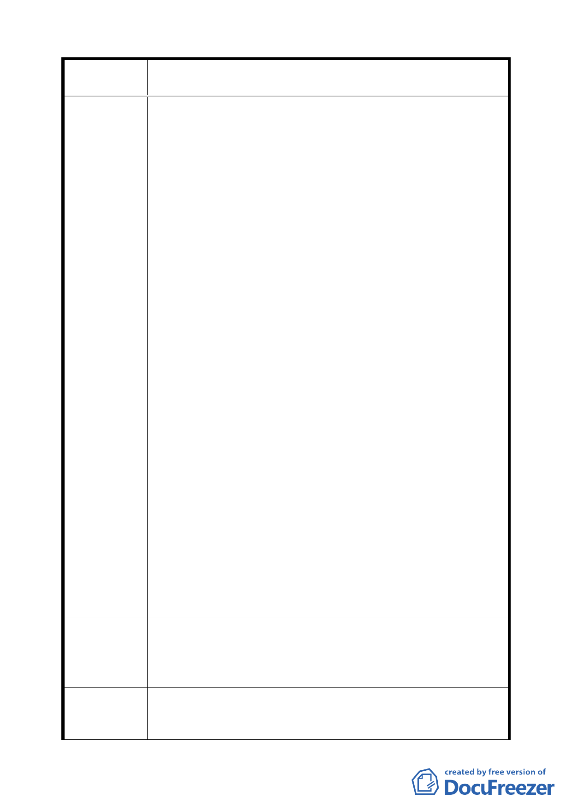

案 名 臺北市文山區都市計畫通盤檢討（細部計畫）案
（二）蒙都委會於第 306 及 311 次會議主持正義，作成
合理措施之決議：「併本計畫案下次通盤檢討時辦
理」。現已歷時約逾 20 餘載，既無結果又未見通
知，本次通盤檢討更未見任何文字交代，甚費猜
疑。
二、 請維護守法者權益；袒護非法，難稱公平。
（一）地籍早已分割；於重測時提出陳情並獲部分更
正。本案於地籍重測前，即由建商合法建築完成
並辦妥地籍分割後售出，後因計畫道路開闢通知
拆屋徵地，經多方查證後發現因都市計畫樁位系
統閉合欠妥，致使原有地籍分割與早期樁位不
符，導致陳情人購置後之建築基地，竟然部分變
為計畫道路，雖經陳情再分割出新地號，但現仍
被視為道路用地，此損及權益一也。
（二）標高早已規劃，為遷就既成，以退讓後達成協議。
陳情人東側計畫道路（福興路四巷）開闢時（71
工字第 153 地號工程合約），為遷就附近先後違法
擅自提高建物一樓高度，連帶需提昇道路標高配
合，至陳情人原高於道路之建物反而低於路面，
雖經協調仍是路面高於一樓地板，時時造成淹水
之恐懼及破壞風水之害，此損及權益之二。
（三）受益線及第一受益區之工程受益費已繳清 20 餘
年，陳情人於福興路四巷完工後，已自 71 年繳完
高額之工程受益費，而該範圍土地面臨 15 弄部分
土地之荒唐笑話，已繳之受益費如何解套？此損
及權益三也。
綜上概陳，如因政府某些部門公權力執行不當、監督不周、
橫向聯繫不足及部分民眾先後不守法，致陳情人遭受權益損
失，卻又未能對陳情人之合法權益給予妥善及公道之救濟，
致損政府形象，且有鼓勵違法之實，天理何在！
一、 酌請修改樁號 363 至 362 之方向角，取其中庸。
建議辦法
二、 週邊道路標高應遵守養工處召開之協調會結論。
三、 陳情人現使用之建物在未改建前准維持原狀況之使
用，俟改建時依新規劃辦理。
專 案 小 組 一、 依現有資料顯示，都市計畫境界線無誤。
審 查 結 論 二、 關於產權開闢、徵收補償、樁位等問題，非關都市計畫
（94.7.7）
事宜，移請市府權責單位處理。
三一